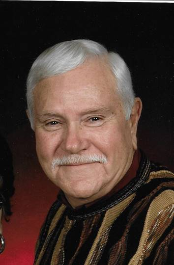

Albert A. Brewer
December 4, 1937 to November 21, 2016
Relationship to St. Andrew United Methodist Church:
Al and his wife Loretta were members of St. Andrew for 19 years. He was often a “greeter” and always met people with and smile and Hugs!
Family:
Wife: Loretta
Sons: Mark, Mathew and Monte Brewer
Grandchildren: Kayla Datzman, Krista Brewer, Madison Brewer, Wesley Brewer, Sebastian Brewer
Great Grandchild: Emma June Datzman
Recognitions, Activities, Special Interests:
Al was a 50-year member of the Masonic Lodge, with pin and certificate.
He enjoyed watching Nascar races and Jeff Gordon was his favorite driver.
He was an enthusiastic Purdue fan, especially basketball. He attended games regularly and frequently was seen wearing Purdue shirts.
Al enjoyed reading and time with family, especially with the grandchildren!
Use of Funds: Donations used for music department and In-touch ministry.
Wooden crosses for use in Grief Group and Grief Booklets
In Blessing Boxes

In 2020 additional choir robes were purchased for the expanding choir.
Obituary
Albert A. Brewer(1937 - 2016)
Albert
A. "Al" Brewer, 78, of West Lafayette, passed away at 5:00 am,
Monday, November 21, 2016 at his residence, surrounded by his family.
He was
born on December 4, 1937 in Battle Ground to the late Newell A. and Eva Irene
(Lontz) Brewer. He was a graduate of Battle Ground High School.
His marriage of 60 years was to Loretta Chafin on August 22, 1956 in Battle Ground
and she survives.
Al co-owned and operated Brewer's Auto Repair, with his brother Ross and
friend, Russ Boardman, for 35 years before retiring in 1996. He was also a bus
driver for the Tippecanoe School Corporation for 18 years and after retirement,
he worked for Walmart for 8 years. Al was a member of St. Andrew United
Methodist Church, and a 50 year member and Past Master of the Octagon Masonic
Lodge #313. He enjoyed watching NASCAR, Purdue sports, football, and
basketball. Al loved being with his family, especially with his grandchildren
and great grandchildren.
Surviving with his wife, Loretta Brewer, are their three sons, Mark Brewer
(wife: Teresa) of Fowler, Matt Brewer of West Lafayette, and Monte Brewer
(wife: Kristy) of West Point; brother, John Brewer of Naples, FL; sister,
Sharon Downey (husband: Dave) of Lafayette; four grandchildren, Kayla Datzman
(husband: Dallas) of Crawfordsville, Krista Brewer of West Lafayette, Madison
Brewer of West Point, and Wesley Brewer of West Point; two great grandchildren,
Emma June Datzman and Sebastian Brewer; and his beloved cat, Max.
Preceding him in death with his parents are three brothers, Gerald, Lloyd, and
Ross Brewer; and two sisters, Mabel Overman and Mert Detloff.
Visitation will be held from 3-6 pm, with a Masonic Service beginning at 6 pm,
Friday, November 25, 2016 at Hippensteel Funeral Home. Funeral service at 10
am, Saturday, November 26 at the funeral home with Pastor Chris Danielson
officiating. Burial to follow in Tippecanoe Memory Gardens. Memorial
contributions may be made to St. Andrew United Methodist Church (4703 N 50 W,
West Lafayette, IN 47906). Share memories and condolences online at www.hippensteelfuneralservice.com
Memorial Gifts through InTouch Ministry:
Published in the Journal & Courier on Nov. 23, 2016